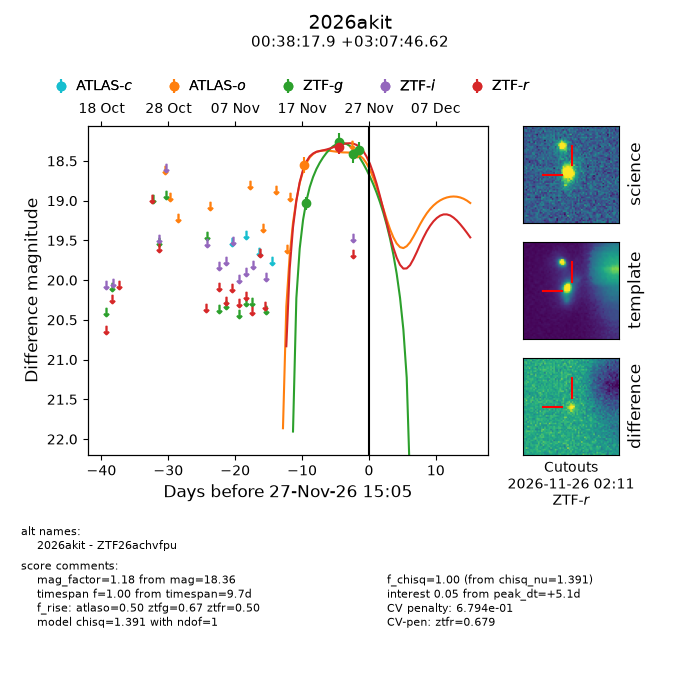
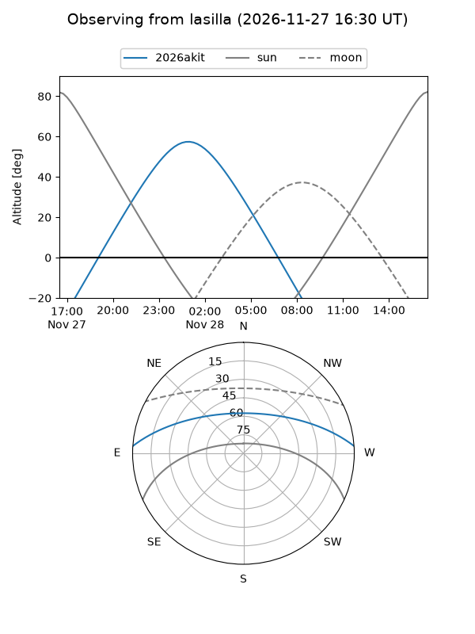
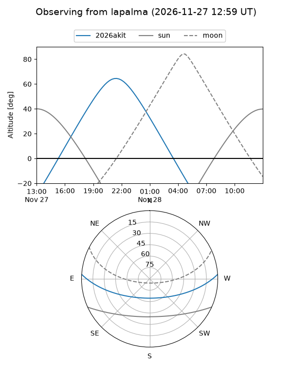
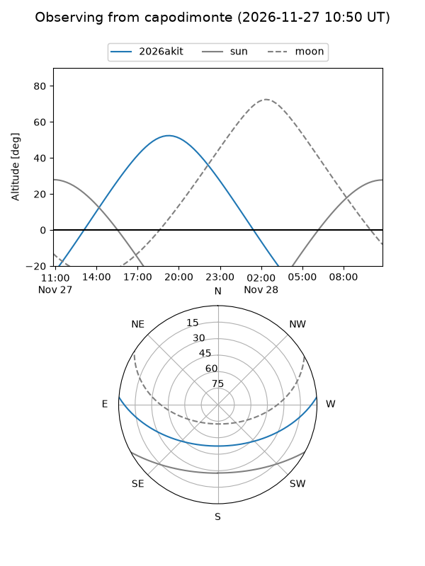
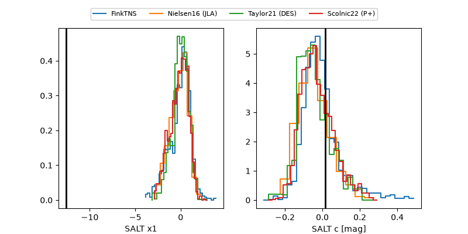

2026akit
Target 2026akit at 2026-11-27 15:06
Aliases and brokers:
FINK-ZTF: ztf.fink-portal.org/ZTF26achvfpu
Lasair-ZTF: lasair-ztf.lsst.ac.uk/objects/ZTF26achvfpu
ALeRCE-ZTF: alerce.online/object/ZTF26achvfpu
YSE-PZ: ziggy.ucolick.org/yse/transient_detail/2026akit
TNS name: wis-tns.org/object/2026akit
Direct TNS query: direct search
alt names
ZTF26achvfpu (ztf,fink_ztf)
2026akit (tns,yse)
Coordinates:
equatorial (ra, dec) = 9.5745,+3.12962
equatorial (HMS+DMS) = 00:38:17.89,+03:07:46.62
galactic (l, b) = (116.4442,-59.57651)
Flags:
likely cv: !!
CV pen: 0.6793622553087395
peak dt: +5.1
Photometry:
last atlaso=18.55, ztfg=18.36, ztfr=18.33
1 atlaso, 4 ztfg, 1 ztfr detections
Lightcurve

Visibility



Additional plots
